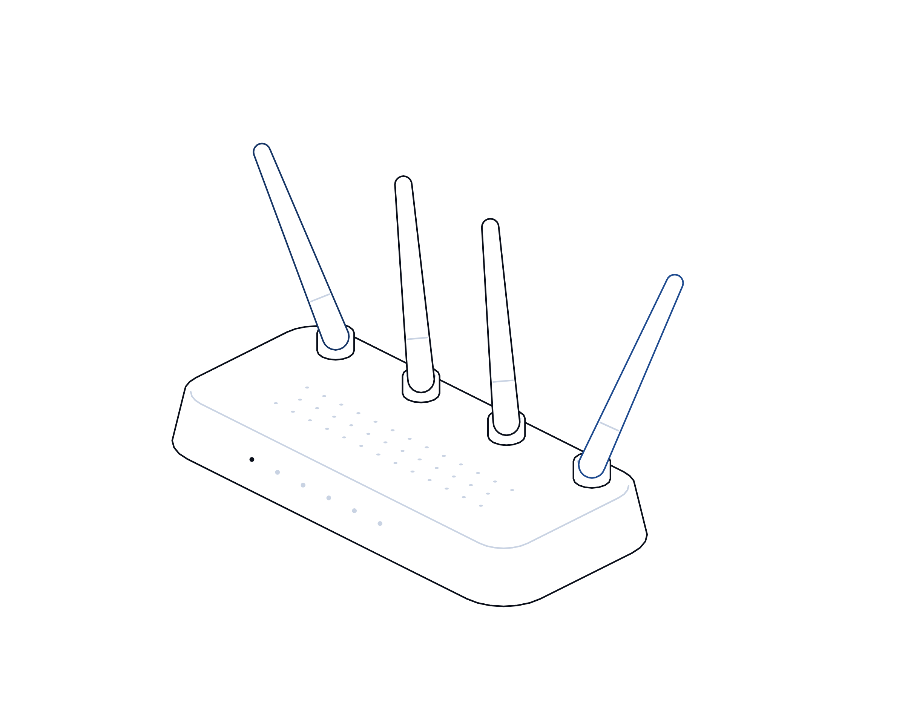

Trust, Exposed

Intelligence report
No. 13 · November 2026
Intelligence report · Supplier and data risk
Trust,
exposed.
A certificate authority left an archive of customer records, including some identity documents, reachable from the internet for 16 months. A blockchain analytics firm found every user's credentials exposed. What the two cases say about the suppliers who hold your most sensitive data.
Evidence-based analysis · Every figure sourcedtransputec.com
Inside
Contents
An evidence-based look at the DigiCert and Chainalysis breaches disclosed in late October and early November 2026, why suppliers that verify identity or hold sensitive data are themselves a breach risk, and what UK organisations should demand of them.
Executive summary03
Key findings04
At a glance05
Timeline06
01The archive left open07
02The supplier pattern11
03What it means for UK organisations16
Sources22
Contents Trust, Exposed · Hot Topics · Intelligence Report02 / 24
Executive summary
The suppliers trusted to prove who you are, or to check who others are, can leak too.
In February 2025 a network migration at DigiCert, one of the world's largest certificate authorities, moved an internal business system out of a VPN-restricted segment and into a zone reachable from the internet. Nobody reviewed it as a security change. Outsiders could self-register accounts and, because of a separate authorisation gap, read archived customer records.1 Most records held business contact details, but a small minority also held documents such as passports, driving licences and utility bills.1,2
DigiCert saw unfamiliar accounts in June 2026, treated them as an account-creation problem, and fixed it. It did not establish that archived data had been read, between 27 June and 2 July 2026, until 19 October.1 It has not said how many people are affected.3
In the same fortnight Chainalysis, whose tools banks and exchanges use to screen crypto transactions, disclosed an intrusion. Its first notice said only non-sensitive identity data was taken. Five days later it said names, usernames, password hashes and live tokens for all users had been exposed, and it took its main services offline.4,5,6
Neither firm's core service appears to have been subverted. DigiCert says no certificates were issued or revoked, and Chainalysis says it has no evidence investigations data was accessed.1,4 But both show how data held for verification or compliance becomes a liability, and how first statements understate scope.
The bottom line
Treat every supplier that holds identity documents, credentials or tokens as part of your attack surface. Know what they hold, hold them to UK GDPR terms, and plan for the day they tell you it has leaked.
Executive summary Trust, Exposed · Hot Topics · Intelligence Report03 / 24
Key findings
Seven things the evidence shows
01
A routine migration created the exposure.
DigiCert's own root cause analysis says the February 2025 move was "treated as an infrastructure change rather than a security change", so no detailed security review took place.1
02
Detection lagged twice.
The system sat exposed for about 16 months before unknown accounts were noticed, then the data access went unrecognised for another three and a half months.1,3
03
First statements understated scope.
Chainalysis moved from "non-sensitive" data on 30 October to all users' password hashes and live tokens by 4 November.4 Counts for DigiCert are still not public.2,3
04
Identity proof is the most dangerous thing to keep.
Passports and driving licences cannot be rotated like a password. DigiCert says only a small minority of records held them, and is still identifying the people involved.1,3
05
This is a pattern, not bad luck.
Okta, Snowflake customers and the MOVEit attack on payroll provider Zellis all show sensitive data leaking through a trusted supplier or its customers' access to it.7,8,9
06
UK regulators now fine processors directly.
The ICO fined Advanced £3.07m in March 2025, its first fine on a processor, and Capita £14m in October 2025.10,11
07
The law on suppliers is tightening.
The Cyber Security and Resilience Bill, now in its final Commons stages, would bring medium and large managed service providers under regulation.12,13
Key findings Trust, Exposed · Hot Topics · Intelligence Report04 / 24
At a glance
The numbers behind the story
Figures are as disclosed by the companies and regulators. Neither company has published a count of affected people.
16 months
From the February 2025 migration to the first sighting of unknown accounts in June 2026, per DigiCert's incident report.1
6 days
The data access window at DigiCert, 27 June to 2 July 2026. Access was confirmed on 19 October.1
0
Certificates affected, according to DigiCert. The account was read-only and could not issue, revoke or validate.1,2
All users
Chainalysis said names, usernames, password hashes and live tokens for all users were exposed.4
£3.07m
ICO fine on Advanced in 2025, the first on a data processor, over a breach affecting 79,404 people.10
58 hours
Time Capita took to quarantine an infected device after a high-priority alert, against a one-hour target.11
 At a glance
At a glanceTrust, Exposed · Hot Topics · Intelligence Report05 / 24
Timeline
From migration to disclosure
Dates from DigiCert's incident report and Chainalysis's incident updates. Chainalysis times are US Eastern.
4 Feb 2025
DigiCert migration
An internal business system moves from a VPN-restricted segment into an externally reachable zone.1
18 to 24 Jun 2026
Unknown accounts seen
DigiCert sees non-DigiCert accounts, judges they have no data access, and a security programme report confirms external sign-up.1
27 Jun to 2 Jul
Archive read
An unauthorised account reads archived customer records. A patch on 2 July closes the gap.1
12 to 19 Oct
Data access confirmed
DigiCert first suspects archive access on 12 October and confirms a reportable event on 19 October.1
30 Oct
Chainalysis discloses intrusion
It says an external actor used "offensive agentic techniques" and took only non-sensitive identity data.4,5
2 Nov
Services pulled
Chainalysis takes Reactor and Data Solutions offline as a precaution.4
4 Nov
Scope widens
Chainalysis reports an on-path attack, takes KYT and its login page offline, then says all users' credentials and tokens were exposed.4
5 to 6 Nov
DigiCert breach reported
Notifications reach customers and press coverage follows.2,3
7 Nov
Chainalysis restores
Reactor, KYT and Address Screening return with enhanced security.4
Timeline Trust, Exposed · Hot Topics · Intelligence Report06 / 24
01
Part 01
The archive
left open.
How a network change at a certificate authority exposed customer records for more than a year.
01What DigiCert disclosed
02How the exposure worked
03Confirmed and unconfirmed
Part 01 Trust, Exposed · Hot Topics · Intelligence Report07 / 24
What happened
A business system, not the certificate engine
Nobody reviewed the migration as a security change. That one decision shaped the next 16 months.
DigiCert filed a preliminary incident report on Mozilla's public bug tracker on 20 October 2026, as browser root programmes require, and followed it with a full report.1 The system involved was an internal business system that archives information customers provide, not the systems that issue certificates.
On 4 February 2025, an infrastructure migration moved that system from a VPN-restricted network segment into an externally accessible availability zone. The system shared an account platform with other products, and that platform's self-registration feature, which does not use multi-factor authentication, became reachable from the internet.1
Self-registered accounts were not assigned to any application, and reviewers assumed that meant they could see nothing. They were wrong: the authorisation model did not block unassigned accounts from reading data.1 DigiCert told customers the incident "was initially handled as an account-creation issue rather than a data-access event".2
The data accessed was mostly business contact details: names, business email addresses, phone numbers and addresses. A small minority of records also held a customer-provided passport, driving licence, utility bill or similar document.1 DigiCert says the account was read-only and could not issue certificates, and that CertCentral and DigiCert ONE were not compromised.2
DigiCert has reset all passwords on the system, turned off self-registration, moved endpoints to private addresses, added monitoring and named a single owner for its security.1 It says it has contacted affected customers and reported the incident to law enforcement, and that it is still reviewing identity documents to identify the individuals involved.1,3
To its credit, the report is detailed and candid about causes. What it does not give is a count, which commenters on the bug have asked for. Until that arrives, any customer who uploaded an identity document should assume it may be affected.
The archive left open Trust, Exposed · Hot Topics · Intelligence Report08 / 24
How the exposure worked
Three gaps, lined up
DigiCert's root cause analysis names three contributing factors. Any one alone might have been caught.

01
The network moved
The migration took the system out from behind a VPN. It was treated as infrastructure work, so no security review took place.1
02
Sign-up came with it
A self-registration flow built for other products, without MFA, was now reachable from outside.1
03
Permissions assumed too much
An account with no assigned application could still read archived records. Reviewers assumed it could not.1
04
Monitoring stayed where it was
Alerts were not reassessed after the move, so new external accounts and bulk reads went unnoticed until October 2026.1
The archive left open Trust, Exposed · Hot Topics · Intelligence Report09 / 24
What we know
Confirmed, and not yet confirmed
The position on 8 November 2026. Early reporting on live incidents can change.
Question
Confirmed
Not confirmed
Cause
Migration without security review, sign-up exposed, authorisation gap.1
Who created the accounts, and why.
Data
Mostly business contacts; a small minority with ID documents.1
How many records, customers or individuals.
Certificates
None affected; account could not issue or validate.1,2
Whether exposed data was later used in fraud.
Notification
Customers contacted; law enforcement told.1
Which data protection regulators were notified.
Individuals
Review under way to identify people whose documents were held.3
When those people will be told.
The archive left open Trust, Exposed · Hot Topics · Intelligence Report10 / 24
02
Part 02
The supplier
pattern.
Chainalysis, and why the companies that check identity and hold credentials keep turning up in breach reports.
01What Chainalysis disclosed
02Two breaches compared
03A long line of supplier incidents
Part 02 Trust, Exposed · Hot Topics · Intelligence Report11 / 24
What happened
Chainalysis: a scope that kept growing
Live tokens held by a supplier are keys to your workflow, not just data about you.
Chainalysis sells blockchain analytics. Its Reactor tool supports investigations, and its KYT and address screening products help exchanges, banks and payment firms check crypto transactions for links to crime and sanctions. On 30 October 2026 it said an external actor using "offensive agentic techniques" had accessed its systems and internal tools.4,5
That first notice was reassuring. It listed user IDs, full names, email addresses and organisation role labels, and said there was no evidence of access to clear-text passwords, MFA secrets or session tokens. It also said the incident was unrelated to the recent Binance theft.4
On 2 November Chainalysis took Reactor and Data Solutions offline as a precaution. On the morning of 4 November it said an on-path attack had exposed a subset of customer passwords. Within the hour it took KYT, address screening and its login page offline after detecting abnormal activity.4
That night it went further: on Monday 2 November it had found that names, usernames, password hashes and live tokens for all users were exposed. It said it had no evidence that investigations data was accessed or attribution data manipulated, and that it was notifying KYT customers whose accounts appeared to have been used without authorisation.4
Restoration required customers to register trusted IP addresses, reset passwords and rotate API keys. KYT and address screening began returning on 6 November, and Reactor on 7 November.4 Chainalysis has not named the attacker; it said the activity resembled attacks on other tech platforms in recent weeks.6
For compliance teams the outage was the immediate problem: transaction screening is a control they rely on. The longer lesson is that live tokens and API keys held by a supplier are keys to your workflow, not just data about you.
The supplier pattern Trust, Exposed · Hot Topics · Intelligence Report12 / 24
Two breaches compared
Different firms, the same lessons
DigiCert and Chainalysis hold different data for different reasons. The failure modes rhyme.
Question
DigiCert
Chainalysis
Why they hold your data
To validate who is asking for a certificate.
To give customers access to screening and investigation tools.
What leaked
Contact details; some passports, licences and utility bills.1
Names, usernames, password hashes and live tokens for all users.4
How it surfaced
Months later, once data access was examined.1
Within days, with scope widening across updates.4
Core service hit?
No certificates affected, per DigiCert.1
No evidence of investigations data access, per Chainalysis.4
What customers must do
Watch for misuse of identity documents and phishing.
Allowlist IPs, reset passwords, rotate API keys.4
The supplier pattern Trust, Exposed · Hot Topics · Intelligence Report13 / 24
The pattern
A long line of supplier incidents
Four earlier cases where sensitive data leaked through a trusted provider or through access to it.
Case
What happened
The lesson
Zellis and MOVEit, 2023
A flaw in payroll provider Zellis's file transfer tool exposed staff data at BA, Boots and the BBC.8
Your data sits in your supplier's suppliers too.
Okta, 2023
First 134 customers; later names and emails of all support system users.9
First disclosures are often too small.
Snowflake customers, 2024
About 165 organisations notified; stolen credentials, no MFA, no allow lists.7
Your access to a supplier is part of the risk.
Advanced, 2022
Entry via a customer account without MFA; NHS services disrupted; fined £3.07m.10
Processors are directly liable in the UK.
Capita, 2023
6.6 million people's data stolen from records held for clients; fined £14m.11
One supplier can expose hundreds of clients.
The supplier pattern Trust, Exposed · Hot Topics · Intelligence Report14 / 24
Why exposure goes unseen
How a migration hides a breach for a year
A system safe only because of where it sat stops being safe the day it moves.
Migrations are the moments when security assumptions quietly stop being true. A system that was safe because it sat behind a VPN is suddenly safe only if every endpoint on it is safe. The firewall rule that did the real work has gone, and nothing on the system itself changes to show it.
DigiCert's report is unusually clear on this. The move was handled as infrastructure work, so the people who would have asked what became reachable were not involved. Its fix is equally telling: a security sign-off and asset inventory update for network access changes.1
Monitoring tends to lag behind the change. Alerts are tuned to how a system was used before it moved. New account sign-ups on an internal tool, or steady read requests from an unfamiliar account, do not trip anything because nobody expected them to happen.
Then comes the interpretation error. When DigiCert saw unknown accounts in June 2026 it concluded, reasonably but wrongly, that they could not see data. It fixed the sign-up problem and moved on. Only later did it look at file access and request volumes and find the reads.1
Archives make all this worse. Old customer records are rarely used, so nobody notices odd access, and they are often kept longer than needed. UK GDPR's storage limitation principle exists precisely so that data you no longer need is not there to lose.14
The general lesson for any organisation, supplier or customer, is simple. Treat every network move as a security change, re-check monitoring after it, and when you find something odd, ask what data it could have reached before deciding it reached none.
The supplier pattern Trust, Exposed · Hot Topics · Intelligence Report15 / 24
03
Part 03
The UK
view.
Your legal duties when a supplier leaks your data, and what to demand before it does.
01Duties under UK GDPR
02Where you are exposed
03Recommendations
Part 03 Trust, Exposed · Hot Topics · Intelligence Report16 / 24
Law and regulation
Their breach, your obligations
A supplier's breach can start your 72-hour clock.
Under UK GDPR, a controller must report a personal data breach to the ICO within 72 hours of becoming aware of it, unless it is unlikely to result in a risk to people. A processor must tell the controller without undue delay.15 If a supplier holds your staff or customers' data on your behalf, its breach can start your clock.
Article 28 requires a written contract with every processor, covering security, help with breach notification, sub-processors, and deletion or return of data at the end of the service.16 Many contracts do this on paper but never test it.
Some suppliers are not processors. A certificate authority validating your organisation, or an analytics platform holding your users' accounts, may act as a controller in its own right for some data. That does not remove your interest: your people's documents and credentials are still exposed, and you may still owe them a warning.
The ICO has shown it will act against suppliers directly. It fined Advanced £3.07m in 2025 after a breach that began with a customer account lacking MFA, its first fine on a processor.10 It fined Capita £14m after attackers stole data on 6.6 million people from records held for its clients.11
More is coming. The Cyber Security and Resilience Bill reached consideration of Lords amendments in the Commons in November 2026.12 The government's factsheet says medium and large managed service providers would have to register, apply proportionate security and report significant incidents.13 It is not yet law, and detail will come in secondary legislation.
None of this is legal advice. But the direction is clear, and the NCSC's supply chain guidance already sets out how to gain control of suppliers in practice.17 Regulators expect you to know who holds your data and to be ready when they lose it.
What it means for UK organisations Trust, Exposed · Hot Topics · Intelligence Report17 / 24
Where you are exposed
Four kinds of supplier to look at first
These suppliers hold what attackers want most: proof of identity and the keys to systems.
Identity and verification
Certificate authorities, right-to-work and background checkers, KYC and onboarding platforms. They hold passports, licences and proof of address.
Credential and token holders
SaaS platforms, analytics tools and integrations that hold your users' passwords, API keys or live tokens.
Bulk data processors
Payroll, pensions, HR, CRM and outsourcers that hold records on thousands of staff or customers.
Managed service providers
Suppliers with privileged access into your systems, and the tools they use to manage them.
If a supplier holds something that cannot be changed after a leak, such as a passport scan, ask why it still has it.
What it means for UK organisations Trust, Exposed · Hot Topics · Intelligence Report18 / 24
Recommendations
Seven things to do now
01
Map who holds what
List suppliers holding identity documents, credentials, tokens or bulk personal data, and name an owner for each.17
02
Minimise and expire
Ask suppliers to delete ID documents once verification is done, and set retention in contract.14
03
Fix the contract terms
Breach notice within hours, not "undue delay", plus sub-processor lists and deletion at exit.16
04
Ask about change control
Ask how network and platform migrations are security reviewed. DigiCert's gap was exactly this.1
05
Rotate on notice
Have a runbook to rotate passwords, API keys and tokens for any supplier within a day.4
06
Hold your side of access
Enforce MFA and IP allowlisting on accounts you hold with suppliers.7
07
Rehearse the call
Practise a supplier breach: who decides on the 72-hour report, who tells staff and customers.15
What it means for UK organisations Trust, Exposed · Hot Topics · Intelligence Report19 / 24
For the board
Questions to put to your leadership team
Ask for evidence, not reassurance.
What we hand over
?Which suppliers hold copies of our people's passports, licences or proof of address, and do they still need them?
?Which suppliers hold tokens or API keys that could act on our behalf?
?When did we last check that suppliers deleted data at the end of a contract?
When they are breached
?Would our contracts get us told within hours, and who receives that call?
?Could we rotate every credential a supplier holds within 24 hours?
?Who decides whether a supplier's breach is reportable to the ICO?
What it means for UK organisations Trust, Exposed · Hot Topics · Intelligence Report20 / 24
Glossary
Terms used in this report
Certificate authority
An organisation trusted by browsers and operating systems to issue digital certificates, after checking who is asking for them.
Availability zone
An isolated location within a cloud provider's region. Moving between zones can change what is reachable.
Self-registration
A feature that lets anyone create an account without an administrator setting it up.
On-path attack
Interception of traffic between two parties. Often called man-in-the-middle.
Password hash
A scrambled form of a password. Weak passwords can sometimes be recovered from hashes.
Live token
A credential that keeps a session or integration logged in. Stolen tokens can bypass passwords and MFA.
KYT
Know Your Transaction. Chainalysis's product for screening crypto transactions for risk.
Controller and processor
Under UK GDPR, the controller decides why data is used; the processor handles it on the controller's behalf.
Storage limitation
The UK GDPR principle that personal data should be kept no longer than needed.
RMSP
Relevant managed service provider: a category the Cyber Security and Resilience Bill would regulate.
Glossary Trust, Exposed · Hot Topics · Intelligence Report21 / 24
Sources
Sources and notes
Sources were accessed in November 2026. Where reports differ, we say so in the text. Early reporting on live incidents can change.
01
DigiCert, Unauthorized access to business system, incident report, Mozilla Bugzilla 2084460, 20 Oct 2026 (full report Nov 2026), https://bugzilla.mozilla.org/show_bug.cgi?id=2084460
02
BleepingComputer, DigiCert data breach exposes customer information, identity documents, 5 Nov 2026, https://www.bleepingcomputer.com/news/security/digicert-data-breach-exposes-customer-information-identity-documents/
03
The Register, DigiCert admits 16-month security lapse exposed customer information, 6 Nov 2026, https://www.theregister.com/security/2026/11/06/digicert-admits-16-month-security-lapse-exposed-customer-information/5308097
04
Chainalysis, Security incident (updates 30 Oct to 7 Nov 2026), https://www.chainalysis.com/blog/security-incident-october-30/
05
The Hacker News, Chainalysis confirms intrusion into its systems, 31 Oct 2026, https://thehackernews.com/2026/10/chainalysis-confirms-intrusion-into.html
06
The Hacker News, Chainalysis breach exposes all users' credentials, forces shutdown of key services, 6 Nov 2026, https://thehackernews.com/2026/11/chainalysis-breach-exposes-all-users.html
07
Mandiant (Google Cloud), UNC5537 targets Snowflake customer instances for data theft and extortion, 10 Jun 2024, https://cloud.google.com/blog/topics/threat-intelligence/unc5537-snowflake-data-theft-extortion
08
The Register, BA, Boots and BBC staff data stolen via MOVEit at Zellis, 5 Jun 2023, https://www.theregister.com/2023/06/05/british_airways_boots_moveit/
09
Help Net Security, Okta breach: hackers stole info on all customer support users, 29 Nov 2023, https://www.helpnetsecurity.com/2023/11/29/okta-breach-customer-support/
Sources Trust, Exposed · Hot Topics · Intelligence Report22 / 24
Sources
Sources and notes
Sources continued. Company statements are quoted as published; neither company had disclosed a count of affected people at the time of writing.
10
BleepingComputer, UK fines software provider £3.07 million for 2022 ransomware breach, Mar 2025, https://www.bleepingcomputer.com/news/security/uk-fines-software-provider-307-million-for-2022-ransomware-breach/
11
Hunton Andrews Kurth, UK ICO fines Capita £14 million following data breach, Oct 2025, https://www.hunton.com/privacy-and-information-security-law/uk-ico-fines-capita-14-million-following-data-breach
12
UK Parliament, Cyber Security and Resilience (Network and Information Systems) Bill, stages, accessed Nov 2026, https://bills.parliament.uk/bills/4035
13
GOV.UK, CSR Bill factsheet: relevant managed service providers, updated 3 Nov 2026, https://www.gov.uk/government/publications/cyber-security-and-resilience-network-and-information-systems-bill-factsheets/relevant-managed-service-providers
14
legislation.gov.uk, UK GDPR Article 5: principles, including storage limitation, https://www.legislation.gov.uk/eur/2016/679/article/5
15
legislation.gov.uk, UK GDPR Article 33: notification of a personal data breach, https://www.legislation.gov.uk/eur/2016/679/article/33
16
legislation.gov.uk, UK GDPR Article 28: processor, https://www.legislation.gov.uk/eur/2016/679/article/28
17
NCSC, Supply chain security guidance (12 principles), https://www.ncsc.gov.uk/collection/supply-chain-security
Sources Trust, Exposed · Hot Topics · Intelligence Report23 / 24
Know what your
suppliers hold.
We help UK organisations map which suppliers hold their sensitive data, tighten contracts and access, and respond quickly when a supplier reports a breach.
Book a supplier risk reviewtransputec.com
Put it into practice
Companion playbook: Know who holds your data
Transputec · Hot Topics · Intelligence report No. 13